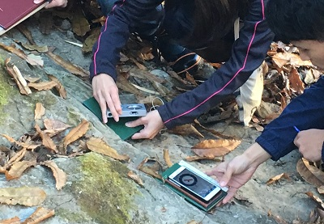
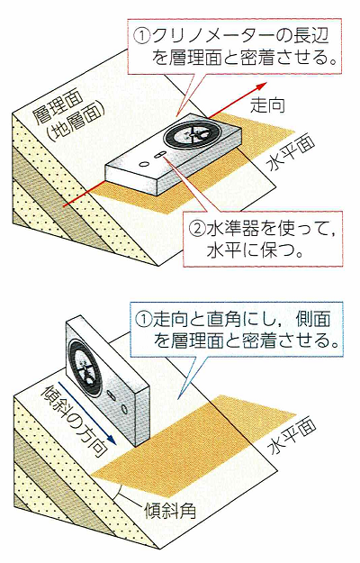

| クリノメーターの使い方 | |
| 層理面、断層面などの走
向・傾斜はクリノメーターで測定します。 走向は、右の上の図のように、まずクリノメーターを水平に保ったまま、クリノメーターの長辺を地層面にあてて方位針の指している方向を読み取りま す。 傾斜は、右の下の図のように、クリノメーターの長辺を走向と直角にして地層面に密着させ、おもりの指す角度を読み取ります。 地層面が露出していない場合はハンマーを使って露出させるか、それでもクリノメーターが地層面にあてられない場合は、下の写真のように地層面と同 方向になるように平面の板をあてて測定するようにします。  |
 |